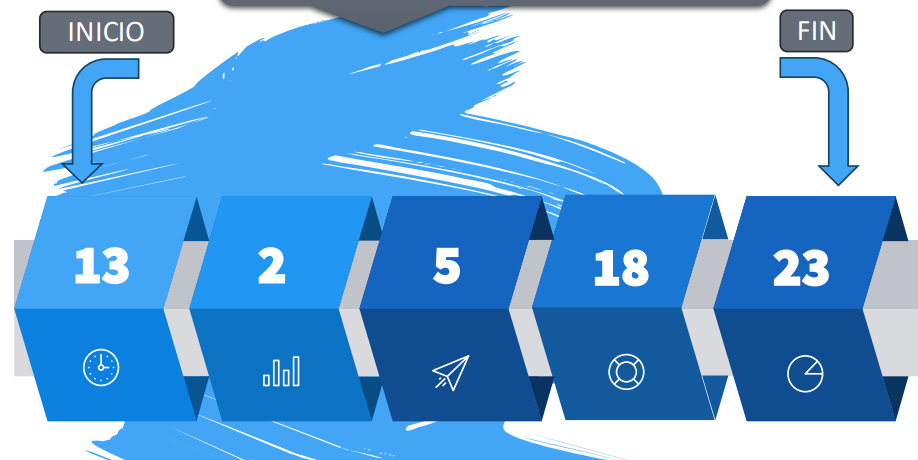
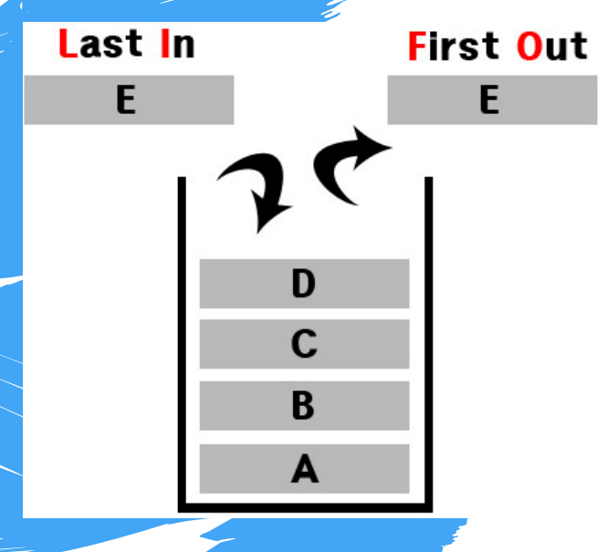
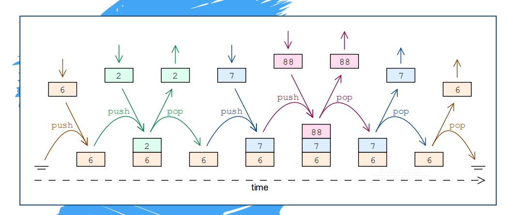
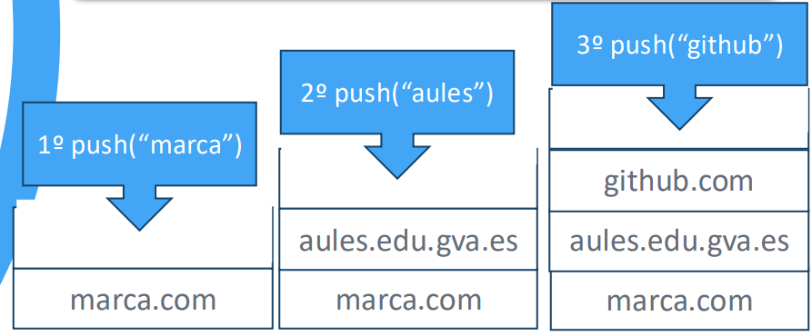
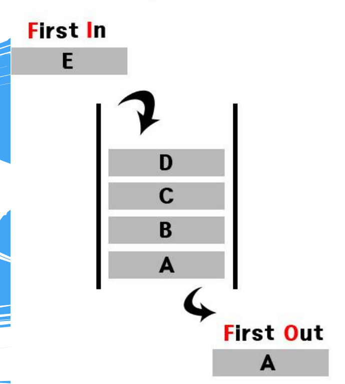
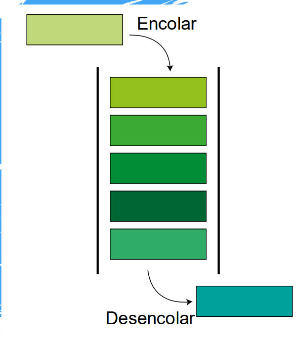
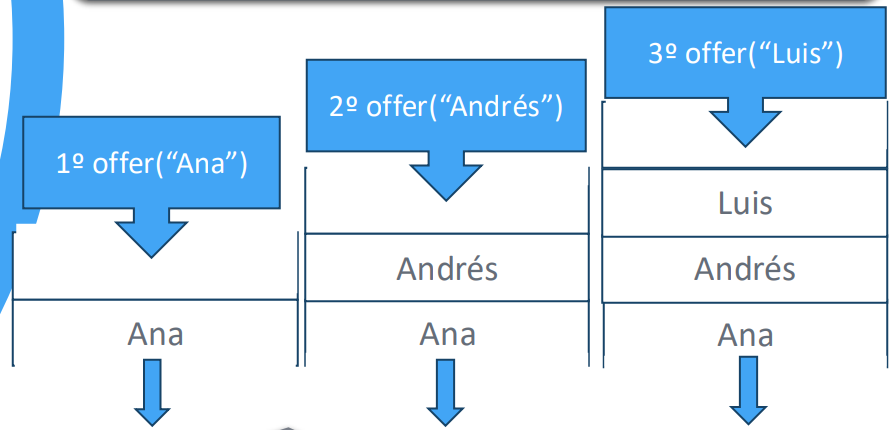

UD8 - Estructuras de Datos Avanzadas
Colecciones en Java: ArrayList, HashMap, LinkedList, Stack y Queue.
8.1. Colecciones en Java
Una colección es una estructura de datos que permite almacenar múltiples valores del mismo tipo, con la ventaja frente a los arrays de que su tamaño es dinámico: crece y decrece según necesidad.
Las colecciones más utilizadas en Java son:
| Colección | Tipo | Característica principal |
|---|---|---|
ArrayList |
Lista | Acceso por índice, tamaño dinámico |
LinkedList |
Lista enlazada | Inserción/eliminación eficiente en cualquier posición |
Stack |
Pila | LIFO — último en entrar, primero en salir |
ArrayBlockingQueue / LinkedList |
Cola | FIFO — primero en entrar, primero en salir |
HashSet |
Conjunto | Sin duplicados, sin orden |
HashMap |
Diccionario | Pares clave → valor |
Tipos wrapper
Las colecciones en Java solo admiten objetos, no tipos primitivos. Usa los wrappers: Integer (por int), Double (por double), Float, Long, Boolean, Character.
8.2. ArrayList
Un ArrayList funciona como un array convencional pero con tamaño dinámico: puedes añadir y eliminar elementos sin declarar el tamaño de antemano.
8.2.1 Declaración e importación
import java.util.ArrayList;
ArrayList<String> bdz = new ArrayList<String>();
ArrayList<Integer> nums = new ArrayList<Integer>();
8.2.2 Métodos principales
| Método | Descripción |
|---|---|
add(elemento) |
Añade un elemento al final |
add(índice, elemento) |
Inserta en la posición indicada, desplazando el resto |
get(índice) |
Devuelve el elemento en esa posición |
remove(índice) |
Elimina el elemento en esa posición |
remove(objeto) |
Elimina la primera aparición de ese valor |
size() |
Devuelve el número de elementos |
clear() |
Vacía la lista |
8.2.3 Ejemplo completo
import java.util.ArrayList;
ArrayList<String> dbz = new ArrayList<String>();
// Añadir elementos
dbz.add("Goku"); // índice 0
dbz.add("Vegeta"); // índice 1
dbz.add("Freezer"); // índice 2
// Insertar en posición concreta
dbz.add(1, "Trunks");
// → Goku | Trunks | Vegeta | Freezer
// Recorrer con for clásico
for (int i = 0; i < dbz.size(); i++) {
System.out.println(dbz.get(i));
}
// Recorrer con for-each (más recomendado)
for (String personaje : dbz) {
System.out.println(personaje);
}
// Eliminar por posición
dbz.remove(2); // elimina "Vegeta"
// Eliminar por valor
dbz.remove("Freezer");
// Vaciar la lista
dbz.clear();
System.out.println(dbz.size()); // 0
Característica de ArrayList
Hay que tener en cuenta que los ArrayList se reestructuran de forma automática después de un borrado de cualquiera de los elementos del array.
8.3. HashMap
Un HashMap es un diccionario: almacena datos en pares clave → valor. La clave permite acceder directamente al valor asociado.
Características del HashMap
- No puede haber claves duplicadas (si insertas una clave que ya existe, el valor anterior se sobreescribe)
- No mantiene un orden determinado
- Sí pueden existir valores duplicados
8.3.1 Declaración e importación
import java.util.HashMap;
HashMap<Integer, String> dbz = new HashMap<Integer, String>();
8.3.2 Métodos principales
| Método | Descripción |
|---|---|
put(clave, valor) |
Añade o actualiza un par clave → valor |
get(clave) |
Devuelve el valor asociado a la clave (o null si no existe) |
remove(clave) |
Elimina el par con esa clave |
containsKey(clave) |
Comprueba si existe esa clave |
size() |
Número de pares en el mapa |
entrySet() |
Devuelve todos los pares para iterar |
8.3.3 Ejemplo completo
import java.util.HashMap;
HashMap<Integer, String> dbz = new HashMap<Integer, String>();
// Insertar pares (clave, valor)
dbz.put(123, "Goku");
dbz.put(912, "Freezer");
dbz.put(500, "Vegeta");
// Obtener por clave
System.out.println(dbz.get(912)); // Freezer
System.out.println(dbz.get(112)); // null → clave inexistente
// Mostrar todo el mapa
System.out.println(dbz); // {912=Freezer, 500=Vegeta, 123=Goku}
// (el orden puede variar)
// Recorrer con entrySet
for (var entrada : dbz.entrySet()) {
System.out.println(entrada.getKey() + " → " + entrada.getValue());
}
8.4. LinkedList (lista enlazada)
Una LinkedList es una lista donde cada elemento está enlazado al siguiente. Es ideal cuando el orden importa y se necesita insertar o eliminar elementos frecuentemente en cualquier posición.

INICIO → [13] → [2] → [5] → [18] → [23] → FIN
8.4.1 Declaración e importación
import java.util.LinkedList;
LinkedList<String> alumnos = new LinkedList<String>();
8.4.2 Métodos principales
| Método | Descripción |
|---|---|
add(elemento) |
Inserta al final |
addFirst(elemento) |
Inserta al principio |
addLast(elemento) |
Inserta al final (equivale a add) |
get(pos) |
Devuelve el elemento en la posición pos |
getFirst() |
Devuelve el primer elemento |
getLast() |
Devuelve el último elemento |
removeFirst() |
Elimina y devuelve el primer elemento |
removeLast() |
Elimina y devuelve el último elemento |
size() |
Número de elementos |
8.4.3 Ejemplo completo
import java.util.Collections;
import java.util.LinkedList;
LinkedList<String> alumnos = new LinkedList<String>();
alumnos.add("Carlos");
alumnos.add("Ana");
alumnos.addFirst("Bea"); // Bea queda al inicio
alumnos.addLast("David");
System.out.println(alumnos); // [Bea, Carlos, Ana, David]
System.out.println(alumnos.getFirst()); // Bea
System.out.println(alumnos.getLast()); // David
alumnos.removeFirst(); // elimina Bea
alumnos.removeLast(); // elimina David
System.out.println(alumnos); // [Carlos, Ana]
// Ordenar la lista
Collections.sort(alumnos);
System.out.println(alumnos); // [Ana, Carlos]
8.5. Stack (pila)
Una pila es una estructura de tipo LIFO (Last In, First Out — último en entrar, primero en salir). Los elementos se apilan por arriba y también se recuperan por arriba.

┌─────────┐
push → │ github │ ← pop / peek
│ aules │
│ marca │
└─────────┘
Ejemplos reales: el botón Atrás del navegador, el comando Deshacer de un editor.
8.5.1 Declaración e importación
import java.util.Stack;
Stack<String> historial = new Stack<String>();
8.5.2 Métodos principales

| Método | Descripción |
|---|---|
push(elemento) |
Apila (inserta) un elemento en la cima |
pop() |
Desapila (extrae y devuelve) el elemento de la cima |
peek() |
Devuelve el elemento de la cima sin extraerlo |
empty() |
true si la pila está vacía |
8.5.3 Ejemplo completo
import java.util.Stack;
Stack<String> historial = new Stack<String>();
historial.push("marca.com");
historial.push("aules.edu.gva.es");
historial.push("github.com");
System.out.println(historial.peek()); // github.com (sin extraer)
System.out.println(historial.pop()); // github.com (extrae)
System.out.println(historial.pop()); // aules.edu.gva.es
System.out.println(historial.empty()); // false
System.out.println(historial.pop()); // marca.com
System.out.println(historial.empty()); // true

8.6. Queue (cola)
Una cola es una estructura de tipo FIFO (First In, First Out — primero en entrar, primero en salir). Los elementos se insertan por un extremo y se extraen por el otro.

offer → [Luis] [Andrés] [Ana] → poll
Ejemplos reales: cola de impresión, peticiones a un servidor.
8.6.1 Declaración e importación
En Java, Queue es una interfaz. La implementación más habitual es con LinkedList:
import java.util.LinkedList;
import java.util.Queue;
Queue<String> cola = new LinkedList<String>();

8.6.2 Métodos principales
| Método | Descripción |
|---|---|
offer(elemento) |
Encola (inserta) un elemento al final |
poll() |
Desencola (extrae y devuelve) el primer elemento |
peek() |
Devuelve el primer elemento sin extraerlo |
isEmpty() |
true si la cola está vacía |
8.6.3 Ejemplo completo
import java.util.LinkedList;
import java.util.Queue;
Queue<String> cola = new LinkedList<String>();
cola.offer("Ana");
cola.offer("Andrés");
cola.offer("Luis");
System.out.println(cola.peek()); // Ana (sin extraer)
System.out.println(cola.poll()); // Ana (extrae)
System.out.println(cola.poll()); // Andrés
System.out.println(cola.isEmpty()); // false
System.out.println(cola.poll()); // Luis
System.out.println(cola.isEmpty()); // true

Resumen comparativo
| Colección | Estructura | Orden | Duplicados | Acceso |
|---|---|---|---|---|
ArrayList |
Lista | Por inserción | ✅ | Por índice |
LinkedList |
Lista enlazada | Por inserción | ✅ | Por índice / extremos |
Stack |
Pila LIFO | Por inserción | ✅ | Solo cima (peek/pop) |
Queue |
Cola FIFO | Por inserción | ✅ | Solo frente (peek/poll) |
HashMap |
Diccionario | Sin orden | ❌ en claves | Por clave |
HashSet |
Conjunto | Sin orden | ❌ | Iteración |
| Operación | Stack |
Queue |
|---|---|---|
| Insertar | push() |
offer() |
| Extraer | pop() |
poll() |
| Consultar sin extraer | peek() |
peek() |
| ¿Vacío? | empty() |
isEmpty() |